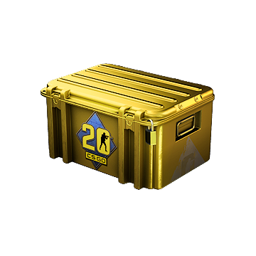
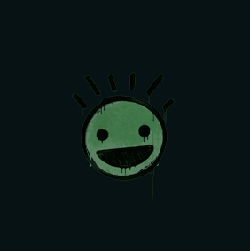
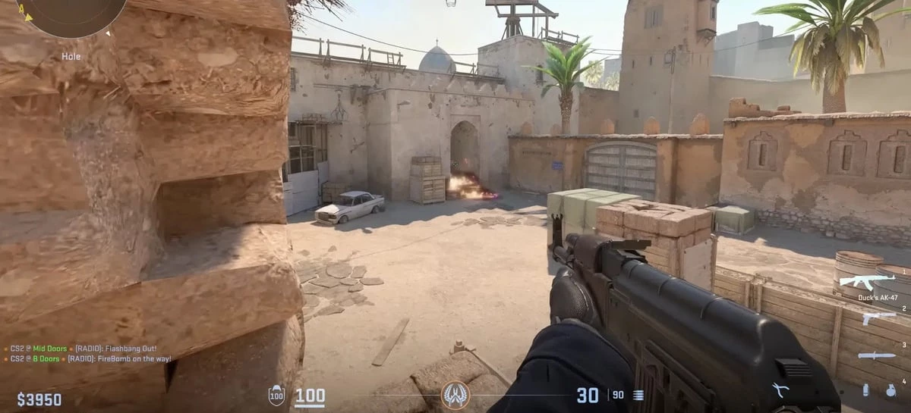

Pelas atulizações do CS:GO durante todo o seu tempo no mercado é possível distinguir quais são maiores e menores, as chamadas grandes atualizações geralmente são aquelas que introduzem algo novo que impacta na gameplay do jogo ou que trazem algum conteúdo como missões e recompensas chamadas no CS:GO de
Durante um tempo operações eram algo fácil de prever, tendo pelo menos 1 operação por ano com exceção de 2014 que foi um ano atípico tendo 3 Operação em apenas um ano. Segue a lista das operações abaixo:
Em 2017 a Valve (Empresa manager do CS:GO) nos deixou em espera de uma operação, durante esse hiato sem grandes atualizações foi muito especulado sobre o fim do CS:GO e apenas em dezembro de 2019 tivemos uma nova operação denominada Shattered Web que foi considerada uma das maiores operações já feitas, introduziu muitas coisas como personalizações de Agentes, drops de skins melhorados e trazendo novamente um grande Hype no nosso querido jogo.
O que o players não gostaram dessa vez foi o preço, que diferente da
Durante as operações, jogadores que compraram tem determinadas missões para fazer para que consiga as recompensas e upe sua medelha que é uma espécie de broxe pra personalizar seu perfil no jogo. Essa medalha vai de
Afinal o que são drops? Drops vem do verbo em inglês cair. Tá, mas e o que isso siginifica no jogo? Drops são itens virtuais que são dropados após partidas do game e podem ser vendidas no mercado da comunidade da steam, valendo dinheiro.
Esses drops podem variar e dentre eles estão grafites, caixas e skins. Toda semana esses drops "resetam" e todo player consegue 2 drops garantidos, 1 por upar de Level e outro de maneira aleatória e geralmente esse é uma caixa.
 No dia 22/03/2023 ocorreu uma atualização que pretende mudar todo o game (até o nome rs), mecânica, gameplay e gráficos mudando a engine do jogo da Source 1 para Source 2 (Engine feita pela Valve Software).
Com essa nova engine tira muitos problemas que o CS:GO passava com "gambiarras" que ocasionava bugs e até mesmo um baixo desempenho. Uma engine moderna e com muito a explorar, porém ainda está na beta, logo, não podemos medir desempenho ou qualquer outra coisa, ainda.
Graficamente o jogo está lindo, porém ainda tem muito a consertar e melhorar no jogo. Abaixo temos uma foto de como está o jogo na Source 2
A grande atualização que mudará todo o game Counter-Strike está por vir. Nela irá mudar drasticamente como o jogo funciona, mas claro se assemelhando ao seu antecessor CS:GO que usava a Source 1 (engine central do jogo).
No CS2 terão muitas mudanças como: Movimentação, Tickrate, sons das armas, gráficos e visuais de mapas e modelos que claro irão melhorar o jogo graficamente e portanto irá precisar de uma hardware melhor para rodar.
Músicas para escutar enquanto navega! 🎧